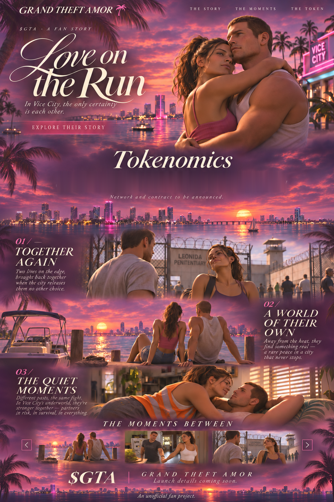

Love on the Run
In Vice City, the only certainty is each other.
Tokenomics
Grand Theft Amor. Ticker: GTA. Supply to be announced. CA: TBA.
Our story
Together again
Two lives on the edge, brought back together.
A world of their own
A rare peace in a city that never stops.
The quiet moments
Stronger together, in risk and in survival.
The moments between

Tokenomics
NAMEGrand Theft Amor
TICKER$GTA
SUPPLYTo be announced
CATBA
Network and contract to be announced.
01 /TOGETHER
TOGETHER
AGAIN
Two lives on the edge, brought back together.
02 /A WORLD
A WORLD
OF THEIR
OWN
A rare peace in a city that never stops.
03 /THE QUIET
THE QUIET
MOMENTS
Stronger together, in risk and in survival.